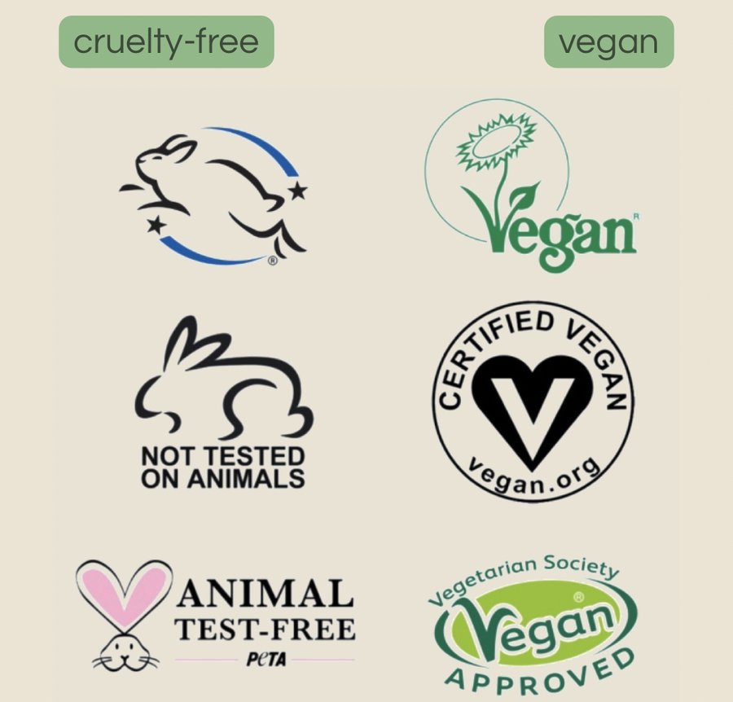

five-minute reads
Learn
Beagles are the dog breed most used in laboratory testing, because their gentle, forgiving temperament makes them easy to handle - and easy to abuse.
New to this? a home kind is a no-lecture guide to cruelty-free and vegan living: honest brand checks, quick swaps, and where the money really goes. Start wherever feels least overwhelming, you don't need to overhaul everything at once, that's not how any of this sticks.
what to actually look for
A bunny on a bottle means nothing unless someone's checked it. These are the three worth trusting, click through, search the brand, see for yourself:
· Leaping Bunny
· Cruelty Free International
· PETA's Beauty Without Bunnies
logos worth trusting, and the fakes to watch for
Anyone can print a bunny on a box. It costs nothing and means nothing unless it's one of the logos an actual certification body checked and approved. These are the real ones, the sort worth trusting on sight:

Leaping Bunny and Cruelty Free International's own logo are the two backed by an actual audit trail, the company has to prove it and get checked again to keep using them. The vegan seals (the sunflower, the Certified Vegan heart from vegan.org, and the Vegetarian Society's Vegan Approved) all confirm the same thing in the other direction: no animal ingredients, not whether animals were tested on to make it. A brand can carry a vegan seal and still test on animals elsewhere, which is exactly why the two questions, cruelty-free and vegan, need checking separately. A generic rabbit doodle with no certifier's name attached, no website, nothing you could look up, is the fake version: it means the brand chose some clip art, not that anyone checked anything.
Years ago I saw a meme of a gorilla wearing lipstick. The caption was something about animal testing. I laughed at it.
I didn't know then that it wasn't a joke about a gorilla in lipstick, because that isn't what happens. Nobody is dabbing blusher on a chimp and taking notes. What actually happens is much quieter, much more clinical, and much worse.
So here's the plain version. No photographs, no shock tactics. Just what the words on the label are covering up.
the tests themselves
Tap a card for the fuller detail. Nothing graphic, just the mechanics most people never get told.
why beagles
This is the part I find hardest.
Of all the non-human animals in this story, dogs are the ones people tend to flinch at hardest, maybe because we already know their personalities. Beagles are the most-used dog in laboratories worldwide, and it isn't because of their biology. It's because of their temperament. They're friendly. They're trusting. They're bred to work in packs, so they don't resist. They forgive you.
A lab technician quoted by the Beagle Freedom Project put it plainly: they won't fight back, they let us do anything we want to them, that's why we like beagles.
The exact trait that makes them good family dogs is the reason they're chosen. Around 4,000 dogs a year are used in UK laboratories, the overwhelming majority of them beagles. Very few are ever rehomed.
"but it's banned here"
Partly. Cosmetic testing is banned in the UK and EU, and several other countries have followed. That's real progress and worth saying out loud.
But: ingredients can still be tested elsewhere and used here. Companies selling into markets that legally require animal testing can still be paying for it while calling themselves cruelty-free at home. Household products, chemicals and pharmaceuticals sit under entirely different rules. And a ban on paper doesn't retire the labs, it moves them.
That's why certification matters more than a bunny drawn on a bottle.
the scale of it, in the UK
Numbers can't do what a Draize test description does, but they're worth having, because they stop this being an abstract argument. Here's the UK Home Office's own Statistics of Scientific Procedures on Living Animals, Great Britain, 2025.
That 2.54 million splits into two quite different categories: 1.32 million (52%) were "experimental procedures" - an animal used in an actual test or study - and the other 1.22 million (48%) were "creation and breeding of genetically altered animals," which is a separate category, not animals used in a test that day.
Of the 1.32 million experimental procedures, the species breakdown was mice 56%, fish 16%, birds 10%, rats 9%, specially protected species (dogs, cats, horses, non-human primates) 1%, and other species 8%. One distinction worth holding onto: "procedures" isn't the same as "animals" - a single animal can be counted more than once if it's used in multiple procedures, so the true number of individual animals is somewhat lower than the procedure count above. The Home Office data doesn't give a single clean "total animals" figure, so I won't invent one here.
the scale of it, globally
I looked for a reliable, current, worldwide figure for cosmetics testing specifically. It doesn't exist. No government or regulator publishes one, because most countries don't require cosmetics companies to report animal use by product category the way the UK and EU do for all research. The number "500,000 animals a year for cosmetics" turns up all over the internet, but I couldn't trace it back to a source I'd trust enough to put on this page, so I'm leaving it out rather than repeating a figure I can't stand behind.
What I can point to instead are real totals for animal testing overall, not cosmetics-specific, but the best evidence of scale that actually exists. Cruelty Free International's own estimate, still cited as the most reliable global figure available, put worldwide animal use for all scientific purposes at at least 192.1 million animals in 2015 - their most recent full global estimate, not because nothing has changed since, but because nobody has produced a more current worldwide count. Regionally, the picture is more up to date: the European Commission's 2022 figures record 9.3 million experiments across the EU and Norway, and the UK Home Office figures above cover 2025.
All of these numbers include far more than cosmetics - chemicals, medical research, pharmaceuticals, basic science - and cosmetic testing has been banned outright in the UK and EU since 2013. The real, current risk for a UK shopper isn't a lab down the road testing your shampoo; it's a brand still paying for tests elsewhere, most often to sell into markets like mainland China, while marketing itself as cruelty-free at home. That's exactly the gap brand-check is built to catch.
if you want the proof
None of this needs to be taken on faith. The UK Home Office statistics, Cruelty Free International's facts and figures, and the Beagle Freedom Project are all a search away.
and then what
Now you know. That's genuinely the whole point of this page, not to shock you into a decision, just to make sure the decision you do make is an informed one. Check a brand before you buy it, or scan what's already in your basket.
Most people land here for the testing, and that is reason enough on its own. This bit is for anyone curious about the rest, no pressure either way.
Cruelty-free and vegan are two different questions. Cruelty-free asks: was anyone tested on? Vegan asks: is anyone in it? A brand can pass one and fail the other, which is why the brand check keeps them as two separate answers, not one badge.

food
The swaps that stick are the boring ones: the milk in your tea, the spread on your toast, the mince in your Tuesday dinner. Supermarket own-brand ranges have got genuinely good, and cheaper than the branded version next to them.

clothes
Watch for leather, wool, silk, down, feathers, fur and shearling. Suede and nubuck are leather by another name. Secondhand is the simplest answer, and the cheapest.
I did not put these two together for years. I bought cruelty-free and ate exactly as I always had, because nobody had ever told me the same question applied to both. If that is you too, you are not behind, you just were not shown it.
want the full picture
Veganuary's free starter guide
The most-used vegan starter guide there is, covering nutrition, what to actually buy, and eating out, written by the people who run the world's biggest vegan pledge every January.
read the guide →check a brand → · see your impact → · shop verified products →
the ones I actually get asked
Do I have to do all of it at once?
No, and I didn't. I started with shampoo, of all things, and it took me about two years to get as far as the fridge. Nobody is marking this.
Isn't it expensive?
The cruelty-free part, mostly not. A lot of the brands cost the same or less than what they replace. The expensive bit is the fancy stuff, and the fancy stuff was always expensive.
What about protein?
Easily the question I get most, which says a lot about how the eyelid-testing chat usually goes down. So, sourced this time: a Cambridge researcher (Dr Chris Macdonald, the university's Better Protein Institute) ranked twenty protein sources this summer on health, cost and environmental impact and tofu came first, beef nowhere near it, using a fraction of the land and water per gram of protein. Beans, lentils and peanut butter weren't far behind. You will not shrivel up. I didn't, and I eat beige food on purpose.
Am I a hypocrite if I only do some of it?
If that were the rule, nobody would qualify, me least of all. Something is not the same as nothing.